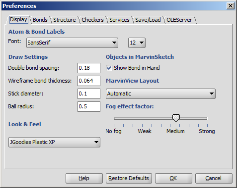
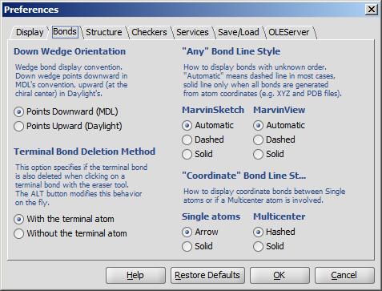
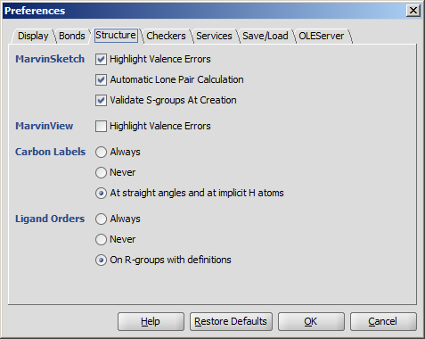
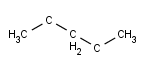
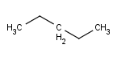
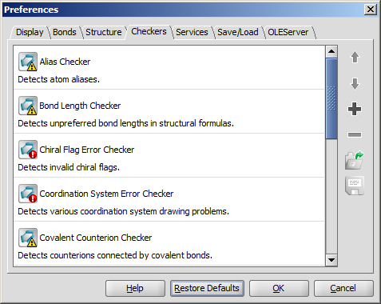
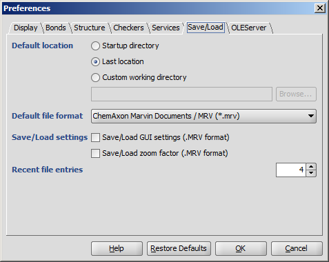
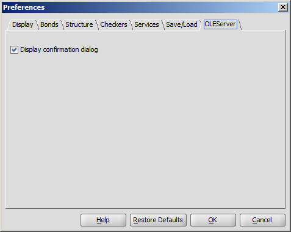
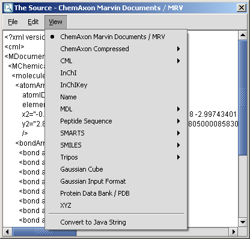
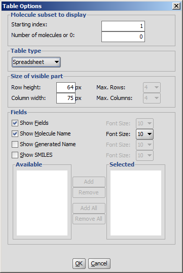

Dialogs of MarvinView
The Preferences dialog window is located at the Edit menu.
It allows you to change many of the MarvinView display settings, including look & feel, error highlighting, and object visibility.
All settings are saved and used when the application is restarted.
Display

- Atom & Bond labels are used as the default font type and size of labels
such as C/T label of bonds, atom query property labels of atoms, etc.
- Double bond spacing is a gap between two lines/sticks representing a double or triple bond measured in Angstroms.
- Wireframe bond thickness is the width of bonds in wireframe mode. It is measured in Angstroms.
- Stick diameter is the width of bonds in stick mode in Angstroms.
- Ball radius is the size of atom spheres in Ball draw type, measured in Angstroms.
- Look & Feel allows changing the visual appearance of GUI components.
The available options are: Java Metal, Motif, JGoodies Plastic, JGoodies Plastic XP,
and the native Look & Feels (Windows, Aqua) based on the underlying operating system.
- Show Bond in Hand when checked bond types are shown under the mouse cursor like template structures.
- MarvinView Layout sets the default layout to Automatic, Molecule matrix or Spreadsheet.
- Automatic fog effect turns on the display mode of fading the bonds and atoms corresponding to the changes of the z coordinate in 3D.
- Fog effect factor: manual setting of the fading strength. No fog: all regions of the structure is displayed with the same line strenght and color. Strong effect: the fading is at its maximum (molecule is only slightly visible at the far end).
Bonds

- Down Wedge Orientation allows changing the wedge bond display convention.
Down wedge points downward in MDL's convention, upward (at the chiral center) in Daylight's.
- Any Bond Line Style offers three different modes to display bonds of unkown types: Automatic, Dashed and Solid.
This option can be separately set to be used in MarvinSketch and MarvinView.
- Terminal Bond Deletion Method offers 2 ways to delete the terminal bond of a molecule: only the bond is
deleted or the terminal atom disappears with the bond.
Structure

- Highlighting Valence Errors highlights atoms having wrong valences with red underline when it is checked.
- Automatic Lone Pair Calculation calculates lone pairs automatically. Make sure View > Misc > Lone Pairs is checked to see the result.
- Validate S-groups At Creation disables the S-group types in the drop-down list which would not yield a
chemically correct structure. Usage in MarvinSketch.
- Carbon Labels options determine the condition of displaying C labels on Carbon atoms.
|  |
 |
 |
| Always | Never | At straight angles
and implicit H atoms |
- Ligand Orders
- Always
- Never
- On R-groups with definitions
Checkers

- Move up/down the checker items: the fixing process may
depend on the sequence of the checkers. Checking order can be
set using the Up/Down buttons on selected checkers.
- Add checkers to the list: the default list can be modified by adding other checkers.
- Remove checkers from the list: the default list can be modified by removing checkers not needed.
- Save checking list configuration: saves your custom checking list
- Open checking list configuration: opens your custom checking list
Save/Load

- Default location: the folder from which to load or to save molecules may be set by the user.
- Startup directory: the folder where the command to start the application was given.
- Last location: the last folder used for opening or saving a structure.
- Custom working directory: a user-defined folder. If
a molecule is loaded from another folder, then the file's location will be offered for saving.
- Default file format determines which type is offered by default when structures are saved to file.
- Save/Load settings
- Save/Load GUI settings (.MRV format) allows storing and loading
parameters like background color, font type, etc. beside the structures.
This option can only be used with the
MRV format.
- Save/Load zoom factor (.MRV format) stores and loads the
zooming scale of the structures.
This option can only be used with the MRV format.
- Recent file entries defines the number of files in the Recent files list in the File menu,
with values between 1 and 10.
OLEServer

You can alter a molecule by directly editing its source in the Edit Source dialog window.
The dialog window provides standard clipboard operations and it is also possible to send the source text to the console.
You can view and edit the source in any of the supported file formats.
You can also convert it to Java String which allows easy integration of the structure to a custom Java application code.
To change the format of the source, simply select the desired one from the View
Menu. After editing the source text, you can send the structure back to the
MarvinSketch canvas by invoking File >
Import As, and pressing Import on the appearing dialog window. This will close the Edit Source dialog window.

You can adjust the layout and display options of the table from the Table
Menu.
- Molecule subset to display: You can define the starting index and the number of molecules to be displayed.
By default, the number of molecules is set to zero i.e., all the molecules of the opened file will be shown.
- Table type: Set the general layout of MarvinView. Two layouts are available: molecule matrix or spreadsheet.
Automatic layout will choose the best arrangement of molecules according to the type of molecule file.
- Size of visible part:
- Set the number of columns and rows of molecule matrix view.
- Set the size of the structure display field of spreadsheet view.
- Fields: Besides structure, optional fields can be displayed as well. Check the requested fields, and set font sizes.
When the molecule file has additional fields, they are listed in the Available and Selected windows.
Set the preferred fields in the Selected window using add and remove buttons.
